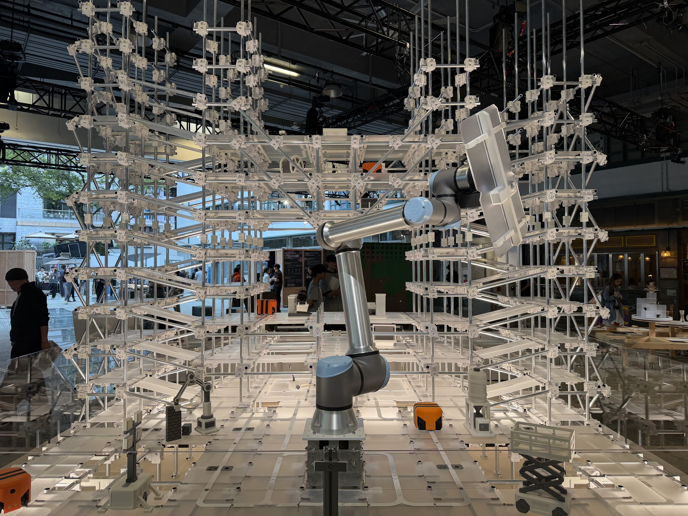
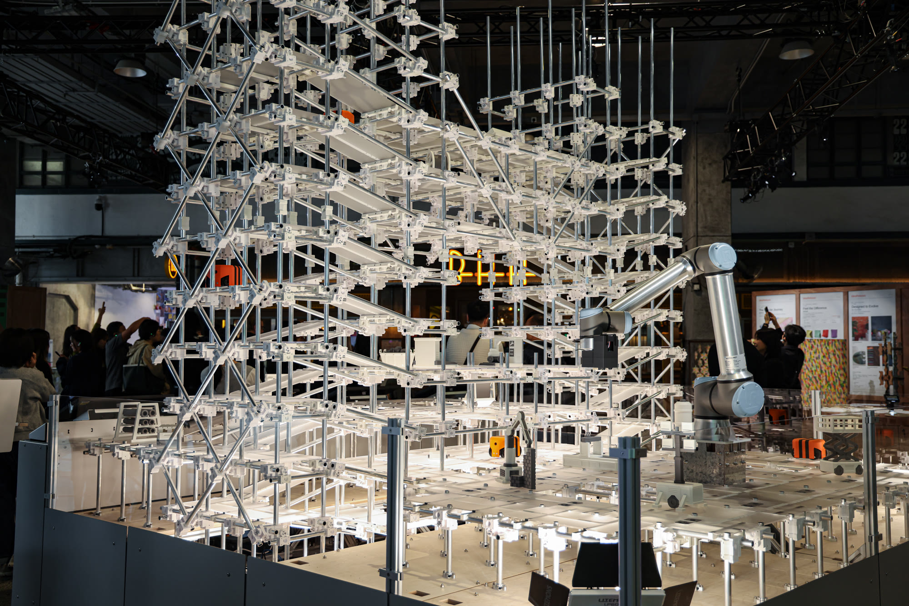
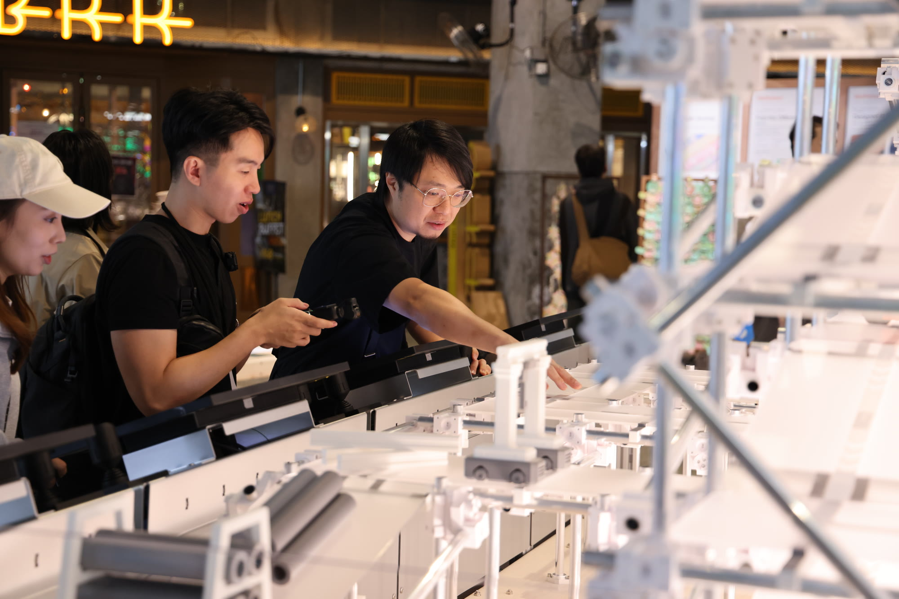
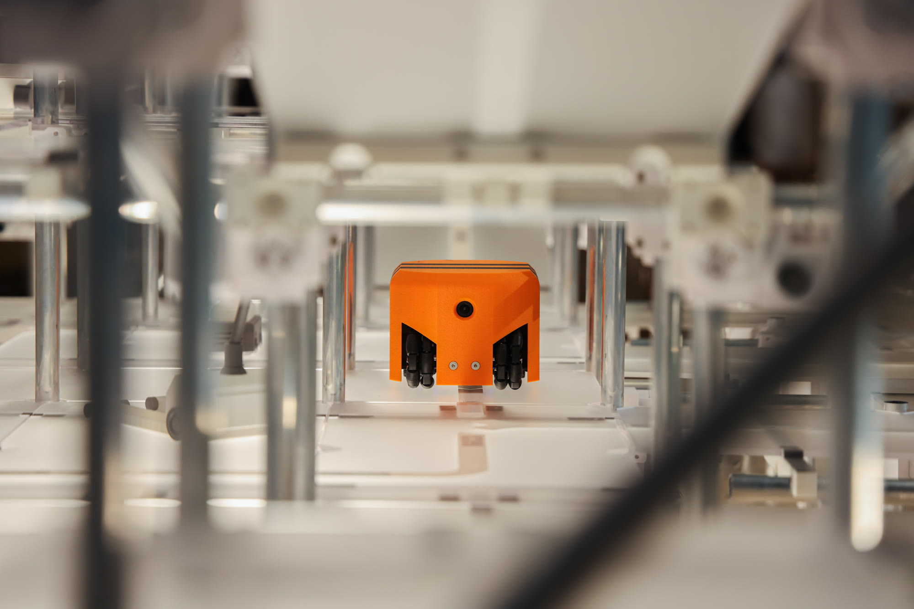
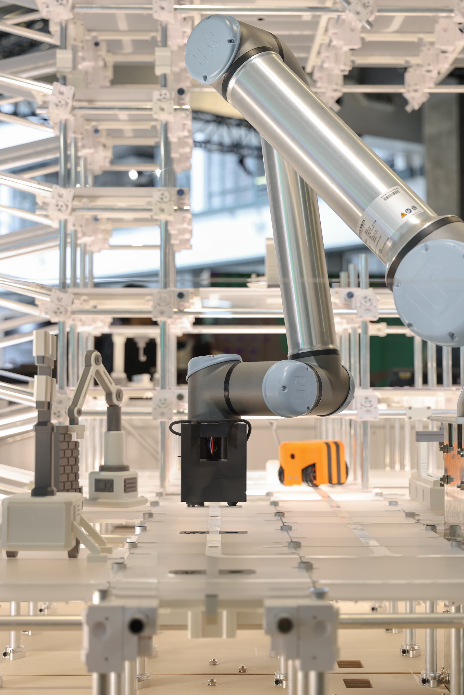
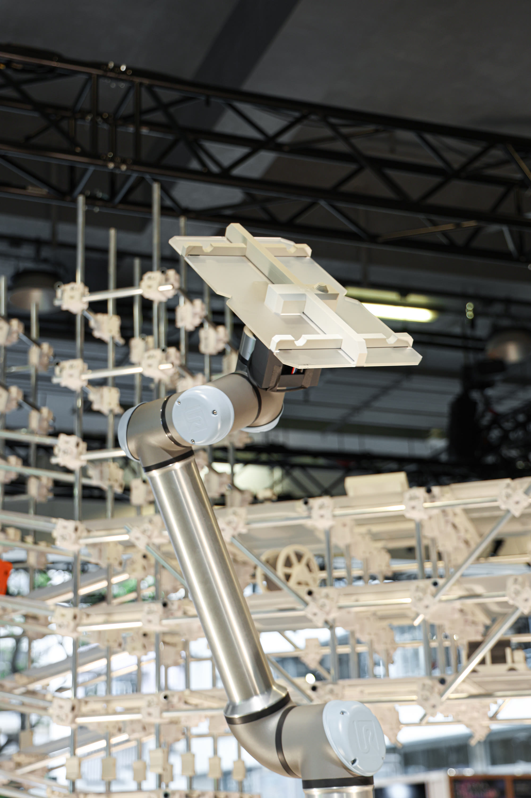
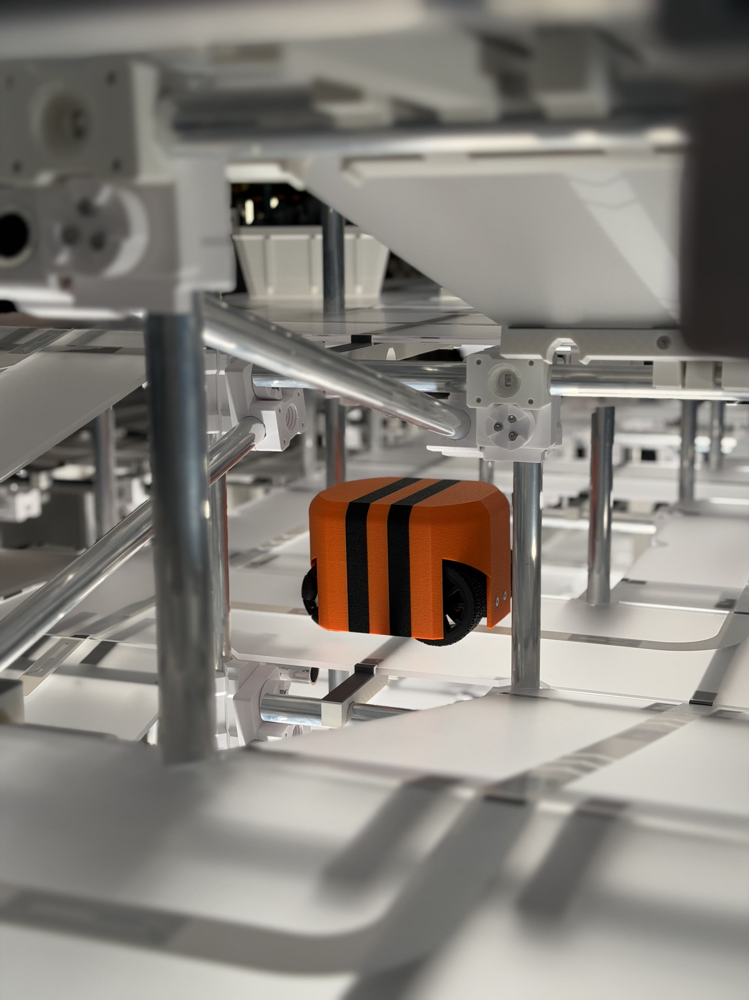
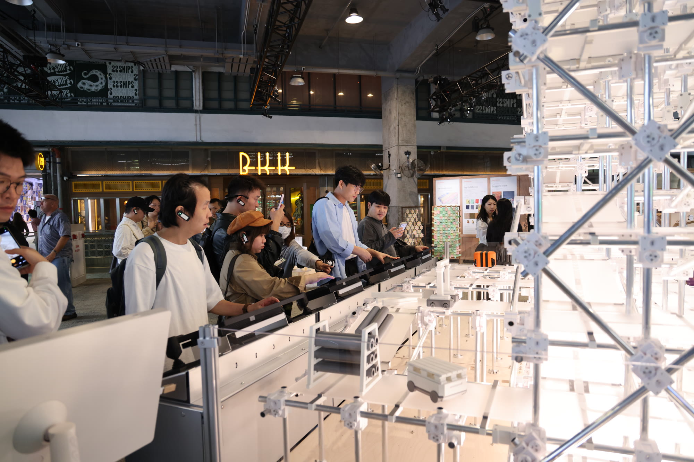

THE FUTURE TRACK · PMQ, HONG KONG
營造異想Imagining
Construction
Otherwise
An interactive robotic installation
by Pok Yin Victor LEUNG
梁博然的互動機械裝置
20–29 NOVEMBER 2026


What if we redesigned construction for robots, instead of teaching robots to build like humans?
Imagining Construction Otherwise transforms research in robotic construction into an interactive installation that explores how buildings might be designed, assembled, and experienced differently in an increasingly automated world.
At the centre of the installation stands a 3.5-metre-tall scaffold-like structure made of aluminium tubes and translucent floor plates. A robotic arm repeatedly installs and removes parts of the structure, while visitors navigate its interior using miniature camera-equipped vehicles.
The work offers a glimpse into one possible future of construction, in which structures, connections, tools, and robots are designed to work together from the beginning.
與其教機械人模仿人類建造，我們可否重新設計建造方式，讓建築更適合機械人？
《營造異想》將建築機械人研究轉化為一件互動裝置，探索在自動化日益普及的世界中，建築物可以如何被重新設計、組裝與體驗。
裝置中央矗立著一座約3.5米高、由鋁管及半透明樓板組成的棚架式結構。機械臂持續裝拆其中的構件，觀眾則可以操控配備鏡頭的小車，穿梭於結構內部。
作品呈現一種未來建造的可能：從一開始便將結構、接頭、工具與機械人一併設計，讓它們互相配合。

A construction site imagined through the eyes of machines.
The installation brings together two robotic systems, each operating at a different scale.
A full-sized industrial robotic arm continuously demonstrates the assembly and disassembly of structural parts. Its repeated movements reveal how a construction process might be designed specifically for automation.
Meanwhile, four miniature robotic vehicles travel along interconnected pathways through the multi-storey scaffold. Visitors take control of these vehicles using physical joysticks, following their journeys through live video transmitted from cameras mounted at the front of each vehicle.
From this first-person perspective, the structure becomes an unfamiliar landscape of corridors, junctions, ramps, and moving machinery.
By placing visitors in the position of a machine navigating the construction site, the installation invites them to imagine an environment designed not only for people, but also for the robots that inhabit and construct it.
從機械的視角，探索一座想像中的工地。
裝置結合了兩套不同尺度的機械人系統。
一座工業機械臂不斷重複裝配及拆卸建築構件，展示如何為自動化重新設計建造工序。
與此同時，四架微型機械車沿著棚架內部的路線行駛。觀眾可以透過搖桿控制小車，並從車載鏡頭傳送的即時影像觀看前方景象。
在第一身視角下，棚架化成一個充滿通道、分岔路口、斜坡與機械裝置的立體空間。
當觀眾以機械的視角探索建築，便有機會重新想像：未來的建築空間，除了為人類而設計，又會否同時為建造及穿梭其中的機械人而設計？



Instead of adapting robots to conventional construction, what if we adapted construction to robots?
Contemporary construction methods, building components, and tools have largely evolved around human workers and their physical capabilities.
Automating these processes often means asking robots to reproduce actions originally intended for human hands: grasping, positioning, supporting, and fastening individual components.
Imagining Construction Otherwise explores another approach: designing structures, connections, robotic tools, and assembly sequences together as a unified system.
與其讓機械人適應傳統建造方式，我們可否讓建造方式更適合機械人？
現今大部分建築構件、工具與施工工序，都是圍繞人類工人的身體能力及操作方式發展而成。
當我們嘗試將這些工序自動化，往往要求機械人模仿人手的動作，包括抓取、對位、支撐及鎖緊構件。
《營造異想》探索另一種方向：將建築結構、連接件、機械人工具及裝配工序視為同一套系統，從一開始便一併設計。
A Connector Designed for Robotic Assembly
At the heart of the research is a specially developed tapered-screw connector.
Unlike conventional fastening systems, this connector allows a robot to pick up a structural part, guide it into position, compensate for small alignment errors, and secure the connection through a coordinated mechanical action.
Its tapered geometry helps correct positional inaccuracies during fastening, reducing the precision demanded of the robot itself.
Rather than relying exclusively on increasingly sophisticated robotic control, the design embeds part of the intelligence of assembly into the physical connection.
為機械人而設計的接頭
研究的核心是一款特別研發的錐形螺絲接頭。
這款接頭讓機械人能夠抓取建築構件、引導構件對位、修正微小的位置偏差，並透過連貫的機械動作完成鎖緊。
錐形設計能在鎖緊過程中協助修正位置誤差，減少機械人對極高定位精度的依賴。
換言之，裝配所需的部分「智慧」，不再完全依靠機械人的控制系統，而是融入接頭本身的機械設計。
Building, Unbuilding, Rebuilding
The robotic arm demonstrates this principle by repeatedly removing and reinstalling floor parts at different locations within the scaffold.
The movements are deliberate and repetitive. Yet behind this apparently simple sequence is an integrated design of structural components, robotic tooling, and assembly procedures.
The demonstration suggests a construction process in which the relationship between a building and the machines assembling it is considered from the outset.
建造、拆卸、再建造
展場內的機械臂不斷將樓板構件從一個位置拆除，再安裝到另一個位置。
看似簡單、重複的動作，背後其實涉及結構構件、機械人工具及裝配程序之間的整合設計。
這個示範提出一種可能：在設計建築物的同時，便開始考慮它將如何被機械人建造。

Automation is not simply about making robots more capable. It is also about rethinking the world in which they operate.
Developed from collaborative research involving City University of Hong Kong and ETH Zurich, Imagining Construction Otherwise translates advances in robotic assembly into a speculative architectural environment.
The installation does not propose a definitive solution or predict what future construction sites will look like.
Instead, it asks what new possibilities might emerge when we reconsider established building methods, not merely to improve efficiency, but to rethink the relationship between humans, machines, and the built environment.
Presented as part of deTour 2026 under the theme Better, Not Perfect, the work approaches technological progress as an ongoing process of experimentation, adaptation, and imagination.
自動化不只是讓機械人變得更聰明，也可以是重新思考機械人所處的世界。
《營造異想》建基於香港城市大學與瑞士聯邦理工學院的合作科研成果，將機械人組裝技術延伸成一個具想像力的建築空間。
作品並非提出一個完美的解決方案，也不是要預言未來工地的模樣。
相反，它希望我們重新審視既有的建造方法，思考自動化除了提升效率之外，還可以如何改變人類、機械與建築環境之間的關係。
作品呼應 deTour 2026「Better, Not Perfect」的主題，將科技發展視為一個持續試驗、調整與想像的過程。

Imagining Construction Otherwise
The project film · 3 min 31 sec
營造異想
項目影片 · 3分31秒
An interactive installation by
互動裝置創作
Pok Yin Victor LEUNG
梁博然
Exhibition production
展覽製作
- Exhibition lead展覽創作
- Pok Yin Victor LEUNG 梁博然
- Producer製作人
- WU Zeyang Simon 吳澤揚
- Assistants製作團隊
- CHAN Wing Tung, Water 陳穎潼
Jing CHANG 常婧
Minran XUE 薛敏然
Pengran CHEN 陳芃然
Research project team
科研團隊
Yijiang Huang
Pok Yin Victor LEUNG
Yen-Ting Liu
Jakob Genhart
Huang Su
Zihao Li
Caelan Garrett
Stelian Coros
香港城市大學ETH Zürich
瑞士聯邦理工學院